출발 전에 꼭 해 두세요
여권과 얼굴을 미리 등록해 두면, 출국할 때 얼굴만 보고 빨리 통과해요. 4명 모두 각자 휴대폰에 깔고 등록해요.
수인이가 4명 것을 한꺼번에 낼 거예요. 따로 안 하셔도 돼요. (11/30~12/2 사이, 무료, 비자는 필요 없어요)
수인이가 도착해서 현지 ATM으로 뽑을 거예요. 따로 환전 안 하셔도 되고, 미국 달러도 필요 없어요. 택시·지하철·식당은 거의 다 카드로 돼요.
🚗 인천공항 주차 예약 완료눌러서 보기
- 어디제2터미널 예약주차장 (인천 중구 운서동 3233-51)
- 세우는 날12/2(수) 오후 4시 (낮 12시~저녁 8시 사이에 들어가면 돼요)
- 빼는 날12/6(일) 아침 7시
- 돌아올 때인천 도착 후 짐을 찾고 1층 입국장 5번 출구 앞 정류장에서 공항02번 셔틀을 타요. '제2터미널 예약주차장'에서 내려 차를 빼면 돼요.
- 터미널까지주차장 앞에서 공항02번 무료 셔틀버스를 타요.
12/2 오후 4시 전까지 취소할 수 있어요.
공항 발렛은 대기 예약 중인데, 안 될 가능성이 커요.
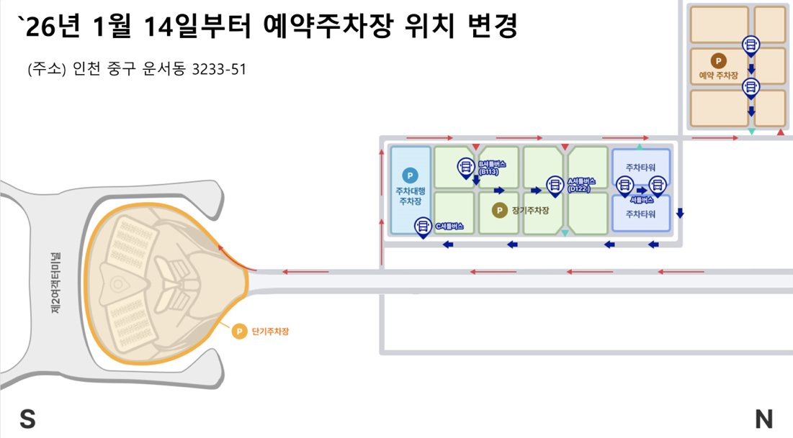
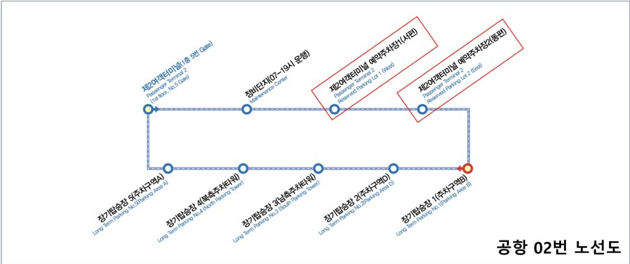
비행기
대한항공이에요. 시간은 모두 그 나라 시간이에요.
인천공항 제2터미널에 오후 2~3시에 도착해요. 싱가포르에는 한밤중에 내려서 바로 공항 옆 호텔로 가서 자요.
🍽️ 기내식 (이륙 직후, 하나 골라요)
옆으로 밀어서 보세요 →

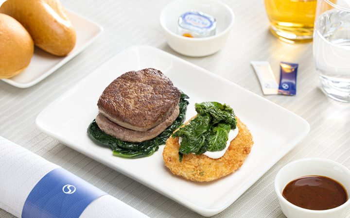
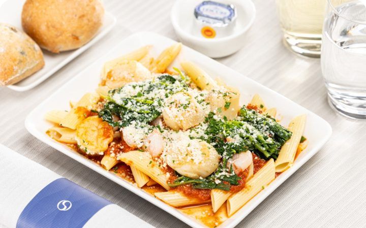
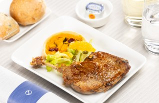
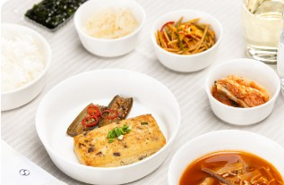
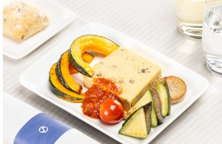
🥪 간식 칠면조 햄 치즈 샌드위치 식사 후 배고프면 언제든 달라고 하세요.
가는 비행기 메뉴판 보기 (PDF) ›창이공항 터미널 4에서 밤 9시 30분까지 짐을 부쳐요. 기내에서 푹 주무시면 일요일 아침 인천 제2터미널이에요.
🍽️ 기내식 현호 · 경희
- 첫 번째 식사 (이륙 후, 하나 골라요)
- 비빔밥 한식
- XO소스의 볶음새우와 마늘볶음 양식
- 두 번째 식사 (내리기 전)
- 유럽식 아침 식사 양식
수인 · 혜인 기내식 보기
옆으로 밀어서 보세요 →
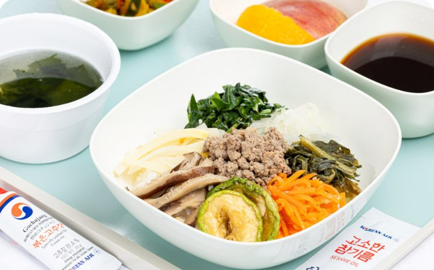

이륙 직후 하나 고르고, 내리기 2시간 20분 전쯤 간식과 음료가 한 번 더 나와요.
수인 · 혜인 메뉴판 보기 (PDF) ›📶 기내 와이파이 무료 (가는 날·오는 날 둘 다)
스타링크 와이파이라 카톡·영상도 돼요.
- 휴대폰을 비행기 모드로 바꾸고 와이파이만 켜요.
- 와이파이 목록에서 wifi.koreanair.com을 눌러요.
- 뜨는 화면에서 연결(아이폰) 또는 링크 복사(갤럭시)를 눌러요. 안 뜨면 인터넷 주소창에 wifi.koreanair.com을 써요.
- 예약한 이름과 좌석번호를 넣으면 끝이에요.
싱가포르 날씨
🌇 해 짐 18:56
🌇 해 짐 18:57
🌇 해 짐 18:57
아큐웨더 12월 예보 기준이에요 (최저 ~ 최고 기온). 매일 흐리고 오후에 소나기나 천둥이 지나가요. 비는 보통 한두 시간이면 그치니 접는 우산만 챙기세요. 멀리 있는 예보라 출발 며칠 전에 다시 확인해서 고칠게요.
날짜별 먹는 것
12/3 목
12/4 금
호텔
두짓타니 라구나 싱가포르
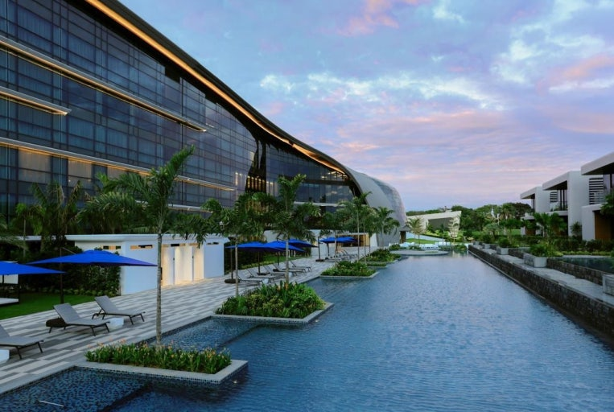
- 공항에서 차로 10분. 새벽 2시쯤 들어가서 자기만 하는 곳이에요.
- 방 2개, 침대 2개짜리 방이에요. 아침 식사 포함.
- 야외 수영장이 있어요. 아침 8시~저녁 8시에 열어요. 아침 먹고 체크아웃 전에 잠깐 수영해도 좋아요.
- 전화 +65 6841 8888
더 풀러턴 호텔 싱가포르

- 마리나베이가 보이는 방 2개예요. 아침 식사 포함.
- 야외 수영장이 있어요. 강과 시내가 보이는 수영장이라 쉬는 시간에 들러요.
- 클럽 라운지를 쓸 수 있어요. 오후에는 애프터눈티(케이크, 스콘, 차), 저녁에는 칵테일과 간단한 음식이 나와요.
- 체크인 오후 3시, 체크아웃 낮 12시. 짐은 언제든 맡길 수 있어요.
- 주소 1 Fullerton Square · 전화 +65 6733 8388
오늘 한눈에
- 오후인천공항 도착 (2~3시) → 라운지에서 식사
- 저녁18:35 비행기 출발, 기내식 먹고 쉬기
- 밤00:15 싱가포르 도착 → 공항 옆 호텔에서 자기
🛏️ 잠자는 곳 두짓타니 라구나 (공항 옆)
한국은 겨울이라 공항까지는 두꺼운 겉옷을 입고, 싱가포르에 내리기 전에 벗어 가방에 넣어요.
- 14:00인천공항 제2터미널 도착 (2~3시)대한항공 카운터에서 짐을 부치고 출국 심사를 해요.
- 15:00공항 라운지식사출국 심사 후 라운지에서 쉬어요. 4명 모두 들어가고, 음식과 술이 무제한이에요.
- 18:35비행기 출발 (KE645)6시간 40분쯤 날아가요. 기내식이 나와요.
- 00:15싱가포르 도착싱가포르 시간이에요(한국은 새벽 1시 15분). 입국 심사 후 택시로 두짓타니 호텔까지 10분.
- 02:00호텔에서 주무시기휴식두짓타니 라구나에서 하룻밤 자요.
 이 날 이동 지도 · 눌러서 크게 보기 →
이 날 이동 지도 · 눌러서 크게 보기 →
오늘 한눈에
- 오전보타닉 가든 (힘들면 빼요) → 머라이언 공원 → 에스플러네이드 옥상
- 점심팜비치 시푸드 칠리크랩
- 오후풀러턴 체크인·쉬기 → 가든스 바이 더 베이 돔
- 저녁라보 저녁 → 리버크루즈 → 크리스마스 불빛 쇼
🛏️ 잠자는 곳 더 풀러턴 호텔
오전 흐림오후 소나기·천둥저녁 소나기
오후와 저녁에 소나기가 올 수 있어요. 저녁 배·야외 쇼가 있어서 접는 우산을 꼭 챙겨요.


- 07:30호텔 아침 식사식사8시 반에 체크아웃해요.
- 09:00풀러턴 호텔에 짐 맡기기택시로 25분쯤 걸려요.
- 09:20보타닉 가든, 내셔널 오키드 가든시원한 아침에 큰 숲 정원을 걷고, 난초 정원을 구경해요.
- 11:00머라이언 공원풀러턴 호텔 바로 앞이에요. 사자상 앞에서 가족사진 찍고 산책해요.
- 11:30에스플러네이드 옥상 정원두리안처럼 생긴 공연장 건물 4층 옥상이에요. 무료로 마리나베이 경치를 볼 수 있어요.
- 12:20걸어서 팜비치로강변을 따라 천천히 걸어가요.
- 12:30팜비치 시푸드 점심식사칠리크랩을 먹어요. 예약해 뒀어요.
- 14:00풀러턴 체크인, 쉬기휴식방에서 쉬시다가 라운지에서 애프터눈티를 즐겨요.
- 15:45헬릭스 다리 산책마리나베이를 따라 걸어요.
- 16:15가든스 바이 더 베이 돔 정원클라우드 포레스트(실내 폭포, 공룡 전시)와 플라워돔(꽃 정원). 실내라 시원해요.
- 18:15라보 저녁식사마리나베이 샌즈 57층 식당에서 노을을 보며 먹어요. 예약해 뒀어요.
- 20:00리버크루즈작은 배를 타고 강을 돌며 레이저쇼를 봐요.
- 21:00가든스 크리스마스 원더랜드크리스마스 불빛 축제를 구경해요.
- 21:35가든 랩소디큰 나무 모양 탑(슈퍼트리)에 음악과 함께 불이 켜지고, 하늘에서 눈도 내려요.
- 22:15호텔 도착
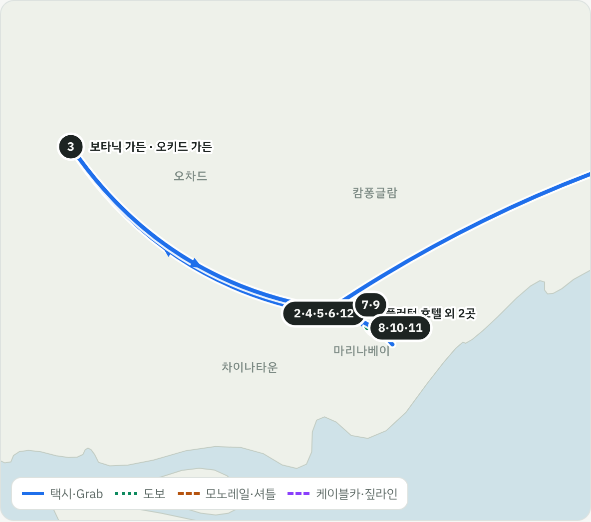
이 날 이동 지도 · 눌러서 크게 보기 →피곤하시면 보타닉 가든은 빼고, 10시에 천천히 체크아웃한 뒤 바로 풀러턴과 머라이언 공원으로 가요.
오늘 한눈에
- 오전케이블카 타고 센토사섬 → 루지 타기
- 점심실로소 해변 트라피자
- 오후팔라완 해변·비치클럽 → 호텔에서 쉬기
- 저녁나이트사파리 → 차로 오차드 조명 → 라우파삿 사테 야식
🛏️ 잠자는 곳 더 풀러턴 호텔
오전 흐림오후 천둥 번개저녁 흐림
해변은 오전이 좋아요. 천둥이 치면 바다에서 나와 실내로 피하고, 모자·선크림도 챙겨요.
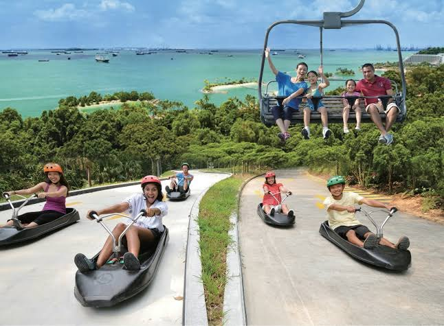

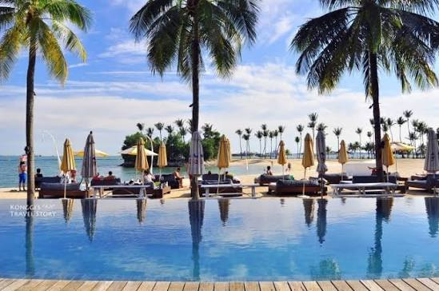
- 아침호텔 아침 식사식사
- 09:30케이블카 타고 센토사섬으로바다 위를 지나가요. 경치가 정말 좋아요.
- 10:00스카이라인 루지바퀴 달린 썰매를 타고 언덕을 내려와요. 속도는 손으로 조절해서 어렵지 않아요. 여러 번 타고, 마지막엔 실로소 해변 쪽으로 내려와요.
- 12:30실로소 해변 점심식사바닷가 피자집 트라피자에서 먹어요.
- 14:00팔라완 해변, 흔들다리섬 안 셔틀버스는 공짜예요. 흔들다리를 건너면 아시아 대륙의 가장 남쪽 끝이에요.
- 15:00탄중 비치클럽에서 쉬기휴식바닷가 그늘 의자에서 시원한 음료 마시며 쉬고, 택시로 호텔에 가요.
- 17:00호텔에서 씻고 쉬기휴식라운지에서 간단히 드시고 가요.
- 18:00나이트사파리로 출발택시로 30~40분. 저녁은 사파리 입구 식당에서 먹어요. 입구에 무료 크리스마스 장식이 있어서 들어가기 전에 구경해요.
- 19:15나이트사파리밤에 움직이는 동물을 트램을 타고 구경해요. 많이 걷지 않아도 돼요.
- 21:45나이트사파리 출발Grab을 타고 가는 길에 오차드로드를 지나며 차 안에서 크리스마스 조명을 봐요. (경유지에 ION 오차드를 넣어요.)
- 22:35라우파삿 사테 야식식사숯불 꼬치구이 사테를 땅콩소스에 찍어 먹어요.
- 23:30호텔 도착라우파삿에서 걸어서 10분이에요.
 이 날 이동 지도 · 눌러서 크게 보기 →
이 날 이동 지도 · 눌러서 크게 보기 →
비가 많이 오면 해변 대신 오셔나리움(큰 수족관)이나 해리포터 전시에 가요.
오늘 한눈에
- 오전체크아웃 → 차이나타운·불아사 → 송파 바쿠테
- 오후오차드로드 구경 → 점보 칠리크랩
- 저녁쥬얼 창이 팀호완 딤섬 → 눈 쇼
- 밤22:30 출발 → 12/6(일) 아침 5:45 인천 도착
🛏️ 잠자는 곳 비행기 안
오전 흐림오후 소나기·천둥저녁 흐림
오후에 소나기가 올 수 있어요. 일요일 새벽 인천은 영하라 비행기 타기 전에 겉옷을 손가방에 꺼내 두세요.
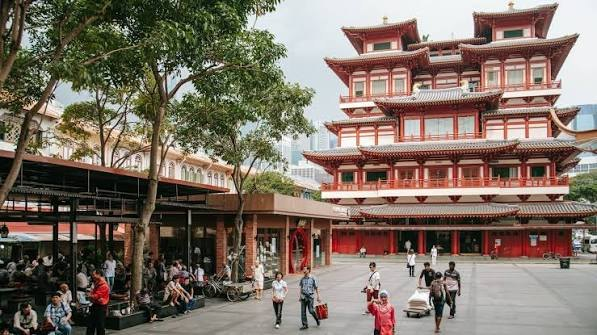
- 08:00호텔 아침 식사식사먹고 나서 방에서 쉬며 짐을 싸요.
- 10:30체크아웃, 호텔에 짐 맡기기
- 10:45차이나타운, 불아사부처님 치아 사리를 모신 큰 절이에요. 안이 화려하고 시원해요.
- 11:30송파 바쿠테식사돼지갈비를 후추 국물에 끓인 바쿠테를 먹어요.
- 12:30오차드로드 구경예쁜 옛날 집이 늘어선 에메랄드 힐을 걷고, 백화점 ION에서 쇼핑해요.
- 15:00점보 시푸드 늦은 점심식사강가 리버사이드 포인트점에서 칠리크랩을 먹어요.
- 16:30호텔에서 짐 싣고 공항으로짐이 많아서 6인승 큰 택시를 불러요.
- 17:30쥬얼 창이 도착캐리어는 1층 입구 근처 무료 카트에 싣고 다녀요. 세계에서 가장 큰 실내 폭포(레인 보텍스)를 봐요.
- 18:45팀호완 딤섬 저녁식사
- 20:05크리스마스 트리와 눈 쇼실내 폭포 앞 16m 크리스마스 트리에서 인공 눈이 내리는 쇼를 봐요.
- 20:30무료 셔틀 타고 4터미널로1터미널 출발층 가운데 승차장에서 타요. 10분 걸려요. 카트는 두고 캐리어만 들고 타요.
- 20:454터미널 도착, 비행기 체크인체크인은 밤 9시 30분에 마감돼요.
- 22:30출발일요일 새벽 5시 45분 인천 도착.
 이 날 이동 지도 · 눌러서 크게 보기 →
이 날 이동 지도 · 눌러서 크게 보기 →
어디서 어디로 가는지 지도로 볼 수 있어요
오늘 한눈에
- 새벽5:45 인천공항 제2터미널 도착 → 짐 찾기
- 아침공항02번 셔틀 → 예약주차장에서 차 빼기
- 아침7시 전 출차 → 집으로
🛏️ 잠자는 곳 우리 집
내리기 전에 비행기 안에서 겉옷을 입어 두세요. 주차장까지 바깥을 잠깐 걸어요.
- 05:45인천공항 제2터미널 도착입국 심사를 하고 짐 찾는 곳에서 캐리어를 찾아요.
- 06:30공항02번 셔틀 타기1층 입국장 5번 출구 앞 정류장에서 타요. '제2터미널 예약주차장'에서 내려요. 무료예요.
- 07:00주차장에서 차 빼서 집으로아침 7시까지 빼도록 예약해 뒀어요.
먹으러 갈 곳
팜비치 시푸드
머라이언 공원 바로 옆. 매콤달콤한 칠리크랩과 후추 맛 블랙페퍼크랩이 대표 메뉴예요. 소스에 튀긴 빵(만터우)을 찍어 드세요.
라보 (마리나베이 샌즈 57층)
높은 곳에서 노을과 시내 야경을 보며 이탈리아 음식을 먹어요.
울루울루 사파리 레스토랑 (나이트사파리)
입구 쪽 푸드코트예요. 현지 볶음밥·국수, 인도 카레, 꼬치구이가 있고 디저트로 벤앤제리스 아이스크림도 있어요. 저녁 6시부터 열어요. 꼬치(사테)는 밤에 라우파삿에서 먹으니 여기선 다른 걸 골라요.
송파 바쿠테
돼지갈비를 후추와 마늘 국물에 푹 끓인 싱가포르 음식이에요. 국물은 계속 더 부어 줘요.
점보 시푸드 리버사이드 포인트
싱가포르에서 가장 유명한 칠리크랩 식당이에요. 강가 자리에서 먹어요.
팀호완 (쥬얼 창이)
홍콩식 딤섬집이에요. 바삭한 차슈번이 유명해요. 공항 안이라 비행기 타기 전에 편하게 먹어요.
풀러턴 클럽 라운지
오후 애프터눈티와 저녁 칵테일이 숙박에 포함돼 있어요. 따로 돈 내지 않으셔도 돼요.
싱가포르 기본 정보
우리 220V 제품은 그대로 써도 돼요. 콘센트 모양만 달라서 영국식 3구 어댑터가 필요해요.
한국이 저녁 7시면 싱가포르는 저녁 6시예요.
1 싱가포르 달러에 약 1,030원이에요 (11월 기준). 10달러면 만 원쯤으로 생각하면 돼요. 대부분 카드가 되고, 푸드코트 작은 가게는 현금만 받기도 해요.
식당 가격 옆 "++"는 봉사료 10%와 세금 9%가 나중에 붙는다는 뜻이에요.
중국어도 많이 써요. 간판과 안내는 거의 영어로 돼 있어요.
호텔과 식당 물은 그냥 드셔도 괜찮아요.
우리와 반대예요. 길 건널 때 오른쪽을 먼저 보세요.
갈 때는 밤 비행기, 올 때도 밤 비행기예요.
싱가포르 돈 생김새
색깔로 구분하면 쉬워요. 그림은 실제 돈을 단순하게 그린 거예요.
동전: 5센트 · 10센트 · 20센트 · 50센트는 은색, 1달러는 금색이에요. 100센트가 1달러예요.
길거리 예절
싱가포르는 규칙이 엄하고 벌금이 커요. 이것만 지키면 돼요.
- 껌은 가져가지 마세요판매와 반입이 금지돼 있어요.
- 전자담배는 절대 안 돼요가지고만 있어도 불법이에요. 일반 담배는 노란 선으로 표시된 흡연 구역에서만 피워요.벌금 큼
- 길에 쓰레기, 침 뱉기 금지작은 휴지 하나도 쓰레기통에 버려요.벌금 있음
- 지하철 안에서는 먹고 마시지 않아요물 한 모금도 안 돼요. 냄새가 강한 두리안도 못 들고 타요.벌금 있음
- 횡단보도로만 건너요무단횡단도 벌금이 있어요.
- 푸드코트 자리에 휴지가 놓여 있으면 맡아 둔 자리예요다른 자리를 찾아요. 다 먹은 쟁반과 그릇은 반납하는 곳에 직접 갖다 놓아요.
- 에스컬레이터는 왼쪽에 서요오른쪽은 걸어 올라가는 사람이 지나가는 길이에요.
- 절에 갈 때는 어깨와 무릎을 가려요12/5 불아사에 갈 때 얇은 숄이나 긴 바지가 있으면 좋아요. 입구에서 빌려주기도 해요.
챙길 것
눌러서 체크해 보세요. 이 휴대폰에만 표시돼요.
알아두실 것
날씨는 예보 기준이에요
날씨 칸은 아큐웨더 12월 예보로 적었어요. 멀리 있는 예보라 출발 며칠 전에 다시 확인해서 고쳐 둘게요.
덥고 습해요
12월에도 낮에는 30도 안팎이에요. 물을 자주 드시고, 힘들면 바로 말씀해 주세요. 오후에는 호텔에서 쉬는 시간을 넣어 두었어요.
소나기가 자주 와요
12월은 비가 많은 철이라 오후에 갑자기 쏟아지곤 해요. 대부분 30분~1시간이면 그쳐서, 잠깐 실내에 들어가 있으면 돼요.
센토사섬 안에서는 교통이 공짜
섬 안 셔틀버스, 버스, 모노레일은 돈을 내지 않아요. 해변 사이를 걸을 필요 없이 타고 다녀요.
물가는 한국보다 조금 비싸요
푸드코트(호커)는 싸고, 식당과 술은 한국보다 1.5배쯤 비싸요. 1 싱가포르 달러는 약 1,030원이에요.
- 푸드코트 한 그릇S$5~8(5천~8천 원)
- 푸드코트 커피·음료S$2~3(2천~3천 원)
- 카페 커피S$7~8(7천~8천 원)
- 식당 메인 요리S$25~40(2만 5천~4만 원)
- 맥주 한 잔 (식당·바)S$15~20(1만 5천~2만 원)
- 생수 한 병 (편의점)S$1.5~2(1,500~2,000원)
- 지하철 한 번S$1~2(1천~2천 원)
- 택시 시내 짧게S$12~20(1만 2천~2만 원)
식당 가격 옆에 "++"가 붙으면 봉사료와 세금으로 약 20%가 더 붙어요.
택시는 딸들이 불러요
Grab이라는 앱으로 불러요. 혹시 길을 잃으시면 그 자리에서 전화 주세요.